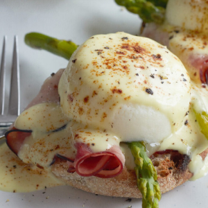

Nutrition Facts
Per Serving: 688 calories; protein 35.3g; carbohydrates 97.9g; fat 14.6g; cholesterol 208.3mg; sodium 1225.6mg. Full Nutrition

This is a delicious traditional Japanese meal consisting of chicken sauteed and then cooked in a Japanese broth, and then finished with egg and served over rice. It's really easy, filling and delicious.
Rinse the rice in 3 to 4 changes of water until the rinse water is almost clear, and drain off the rinse water. Bring the rice and 4 cups of water to a boil in a saucepan over high heat. Reduce heat to medium-low, cover, and simmer until the rice is tender and the liquid has been absorbed, 20 to 25 minutes.
Place the chicken in a nonstick skillet with a lid, and cook and stir over medium heat until the chicken is no longer pink inside and beginning to brown, about 5 minutes. Stir in the onion, and cook and stir until the onion is soft, about 5 more minutes. Pour in the stock, and whisk in soy sauce, mirin, and brown sugar, stirring to dissolve the sugar. Bring the mixture to a boil, and let simmer until slightly reduced, about 10 minutes.
Whisk the eggs in a bowl until well-beaten, and pour over the chicken and stock. Cover the skillet, reduce heat, and allow to steam for about 5 minutes, until the egg is cooked. Remove from heat.
To serve, place 1 cup of cooked rice per bowl into 4 deep soup bowls, top each bowl with 1/4 of the chicken and egg mixture, and spoon about 1/2 cup of soup into each bowl.
Per Serving: 688 calories; protein 35.3g; carbohydrates 97.9g; fat 14.6g; cholesterol 208.3mg; sodium 1225.6mg. Full Nutrition